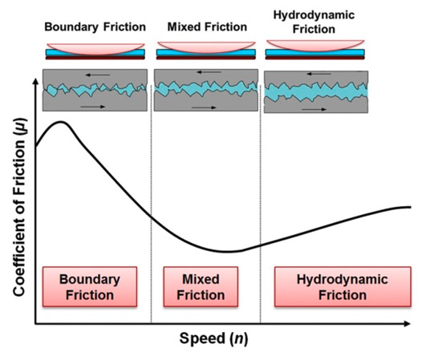
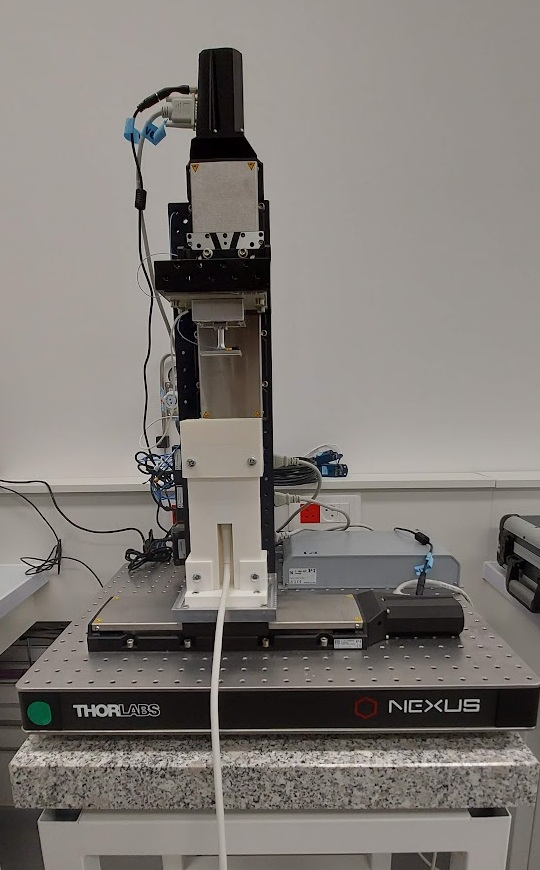
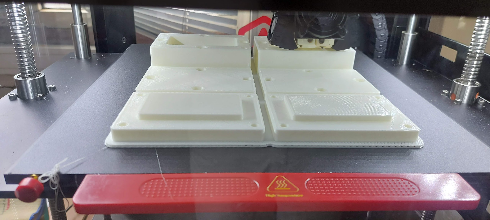
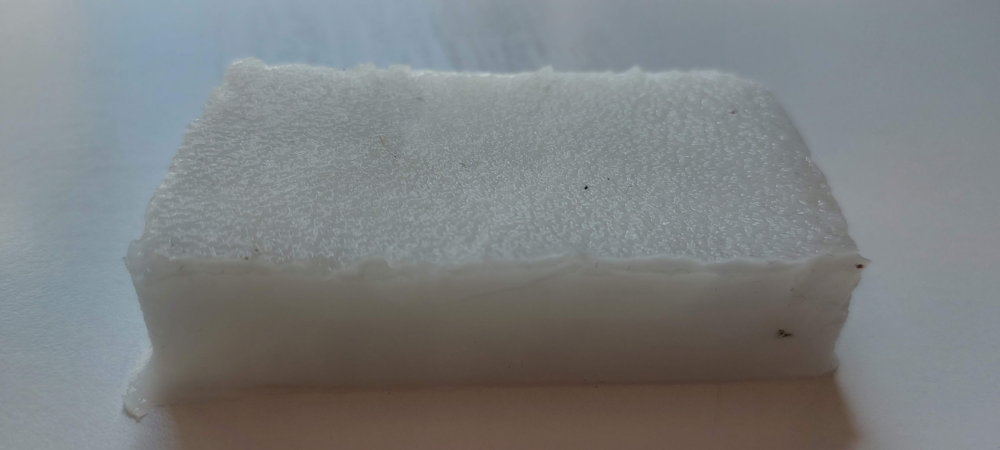
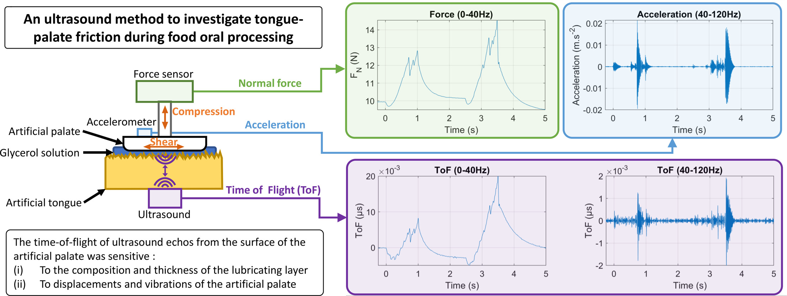

Oral Tribology and Signal Analysis#
Oral tribology is an emerging field that studies friction, lubrication, and wear between interacting surfaces within the oral cavity. This chapter explores tribological principles relevant to food texture perception and introduces signal analysis approaches for characterizing oral friction mechanisms.
Introduction to Oral Tribology#
Unlike rheology, which characterizes bulk material properties, tribology examines system properties involving two interacting surfaces in relative motion with a fluid layer between them. In the oral context, this closely mimics the tongue moving against the hard palate with a thin layer of saliva and food between the surfaces.
Relevance to Food Texture#
Tribological measurements provide insight into thin-film related texture attributes:
Attribute |
Tribological Basis |
|---|---|
Creaminess |
Oil droplet coalescence, emulsion structure |
Smoothness |
Low friction coefficient, particle size |
Slipperiness |
Lubrication efficiency |
Greasiness |
Fat film behavior |
Astringency |
Salivary pellicle disruption |
The Stribeck Framework#
The Stribeck curve describes friction behavior across different lubrication regimes:
{kind=link}

Fig. 8 Stribeck curve with three lubrication regimes: boundary, mixed and hydrodynamic.#
Lubrication Regimes:
Boundary regime — Direct surface contact; friction dominated by surface properties and adsorbed films
Mixed regime — Partial fluid film; combination of surface contact and hydrodynamic effects
Hydrodynamic regime — Complete fluid film separation; friction determined by fluid viscosity
The Sommerfeld number combines:
η = fluid viscosity
V = sliding velocity (entrainment speed)
P = normal load (contact pressure)
Biomimetic Tribometer Design#
Design Principles#
Effective oral tribometers must replicate key oral conditions:
Surface properties:
Comparable hardness and viscoelasticity to oral tissues
Similar roughness to tongue papillae
Mucosal-film coating capability
Appropriate hydrophobicity
Operating parameters:
Physiologically relevant sliding speeds (1–100 mm/s)
Realistic contact pressures (0.01–2 N)
Temperature control (~37°C)
Saliva compatibility
Custom-Built Tribometer Systems#
Several approaches have been developed for oral tribology:
Texture analyzer-based tribometer:
Novel attachment converting texture analyzer for tribological measurements
Reliable and affordable alternative to commercial tribometers
Successfully applied to wine astringency, toothpaste smoothness, yogurt creaminess
Soft oral tribometer (STAT):
PDMS substrates mimicking soft oral tissues
Enables study of deformable contact conditions
Better represents tongue-palate interactions
In situ oral tribometer:
Synchronization with IOPI (Iowa Oral Performance Instrument)
First measurements of oral lubrication in vivo
Pressure sensor used as probe for normal load detection
{kind=link}

Fig. 9 Custom-built oral tribometer with hard palate and soft artificial tongue.#
Signal Analysis for Friction Characterization#
The Stick-Slip Phenomenon#
During tribological measurements, friction signals often exhibit oscillatory behavior known as stick-slip. This phenomenon provides valuable information about:
Surface texture interactions
Lubrication film stability
Particle entrainment effects
Food microstructure breakdown
Spectral Analysis Approach#
Friction force signals can be analyzed using spectral methods to extract meaningful texture information:
Time-domain features:
Mean friction coefficient
Standard deviation (signal roughness)
Peak-to-peak amplitude
Autocorrelation characteristics
Frequency-domain features:
Power spectral density
Dominant frequencies
Spectral centroid
Bandwidth characteristics
Signal Processing Pipeline#
# Conceptual signal analysis workflow
import numpy as np
from scipy import signal
from scipy.fft import fft, fftfreq
def analyze_friction_signal(friction_data, sampling_rate):
"""
Analyze friction signal for texture characterization.
Parameters
----------
friction_data : array
Raw friction force measurements
sampling_rate : float
Data acquisition rate (Hz)
Returns
-------
dict
Time and frequency domain features
"""
# Time-domain analysis
mean_friction = np.mean(friction_data)
std_friction = np.std(friction_data)
# Detrend signal
detrended = signal.detrend(friction_data)
# Frequency-domain analysis
n = len(detrended)
frequencies = fftfreq(n, 1/sampling_rate)
fft_values = fft(detrended)
power_spectrum = np.abs(fft_values)**2
# Extract spectral features
positive_freqs = frequencies[:n//2]
positive_power = power_spectrum[:n//2]
# Spectral centroid
centroid = np.sum(positive_freqs * positive_power) / np.sum(positive_power)
return {
'mean_friction': mean_friction,
'std_friction': std_friction,
'spectral_centroid': centroid,
'dominant_frequency': positive_freqs[np.argmax(positive_power)]
}
Tongue 3D printing tehniques#
{kind=link}

Fig. 10 3D printing of moulds used for soft artificial tongues.#
Tongue Roughness Effects#
The tongue surface exhibits complex topography with different papillae types:
Papillae Type |
Function |
Tribological Impact |
|---|---|---|
Filiform |
Mechanical grip |
Increased boundary friction |
Fungiform |
Taste sensation |
Local pressure variations |
Foliate |
Taste (lateral) |
Edge effects |
Circumvallate |
Taste (posterior) |
Flow disruption |
Individual tongue roughness significantly affects:
Friction coefficient magnitude
Stick-slip frequency
Lubrication regime transitions
Sensory perception intensity
{kind=link}

Fig. 11 Soft artificial tongue made with PVA cryio-polymer.#
Food–Saliva Interactions in Tribology#
Saliva Functions#
Saliva plays multiple roles in oral lubrication:
Wetting and lubricating oral surfaces
Aggregating food particles into cohesive bolus
Interacting chemically with food components
Forming salivary pellicle on oral surfaces
Interaction Mechanisms#
Food–saliva interactions alter tribological behavior through:
Surface coating — protein adsorption changes surface properties
Particle clustering — affects entrainment behavior
Colloidal interactions — bridging, depletion, steric effects
Complexation — protein–polysaccharide interactions
Enzymatic activity — starch breakdown by α-amylase
Oral Emulsification#
A significant finding in oral tribology is that saliva can act as an emulsifier:
Oil/fat is immediately dispersed when mixed with saliva
Individual capability for oral emulsification varies
This affects the transition from creaminess to greasiness perception
Challenges traditional theories of fat sensation based on bulk lubrication
Correlating Tribology with Sensory Perception#
Friction–Sensory Relationships#
Strong correlations have been established between tribological measurements and sensory attributes:
Slipperiness:
Slipperiness ∝ 1/μ
Lower friction coefficient corresponds to higher perceived slipperiness (R² > 0.99 reported).
Creaminess:
Creaminess = f(μ, η, droplet size, coalescence)
Higher emulsion viscosity with lower friction typically increases creaminess perception, though saliva presence complicates this relationship.
Astringency:
Astringency ∝ μ at low sliding speeds
Red wine astringency correlates with friction coefficient at ~0.075 mm/s (R² = 0.93).
Limitations and Challenges#
Current obstacles in applying tribology to sensory prediction:
Vague attribute definitions — thin-film texture terms lack precise definition
Substrate variability — no standardized oral-mimicking surfaces
Tribometer settings — varied configurations across studies
Saliva complexity — large inter- and intra-individual variation
Tongue topography — difficult to replicate in vitro
Advanced Tribological Methods#
Dynamic Tribology Protocol (DTP)#
Protocol for studying salivary pellicle response to food interactions:
Form salivary pellicle on substrate
Introduce test food/ingredient
Monitor friction evolution over time
Correlate with sensory perception
In Situ Oral Measurements#
The synchronization of tribometers with oral pressure sensors enables:
Real-time measurement of oral friction
Correlation with tongue pressure
Recording as function of time or sliding distance
Validation against sensory ratings
{kind=link}

Fig. 12 Schematic of biomimetic oral tribometer setup with various sensors.#
Applications#
Food Product Development#
Tribological screening for:
Fat replacement strategies
Creaminess optimization in low-fat products
Astringency management in beverages
Mouthcoating reduction in protein drinks
Dysphagia Management#
Understanding lubrication for safe swallowing:
Thickened fluid optimization
Bolus cohesiveness assessment
Residue prediction
Oral Care Products#
Formulation optimization for:
Toothpaste smoothness
Mouthwash feel
Denture lubricants
Summary#
Oral tribology bridges the gap between instrumental measurements and sensory perception of thin-film texture attributes. Key advances include:
Biomimetic tribometer design — surfaces and conditions mimicking oral cavity
Signal analysis methods — extracting texture information from friction signals
Food–saliva interaction understanding — recognizing saliva’s active role
In situ measurement capability — validating in vitro findings
Future developments should focus on:
Standardized substrates and protocols
Individual variation modeling
Multi-modal sensing integration
Real-time texture prediction
References#
Chen, J., & Stokes, J.R. (2012). Rheology and tribology: Two distinctive regimes of food texture sensation. Trends in Food Science & Technology, 25(1), 4–12.
Glumac, M., Bosc, V., Menut, P., Ramaioli, M., Restagno, F., Mariot, S., & Mathieu, V. (2023). Signal analysis to study the impact of tongue roughness on oral friction mechanisms with a custom-built tribometer. Biotribology, 35–36, 100257